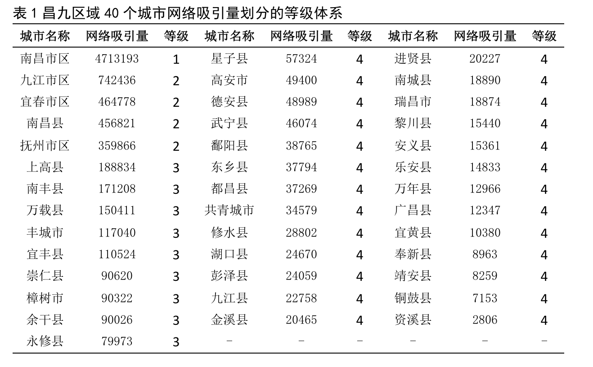
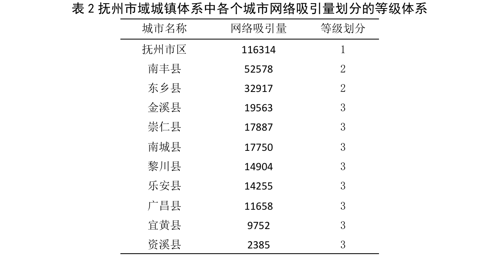
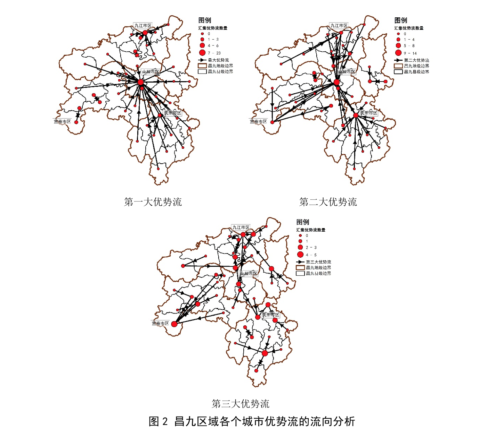
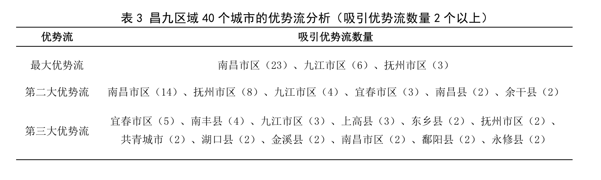
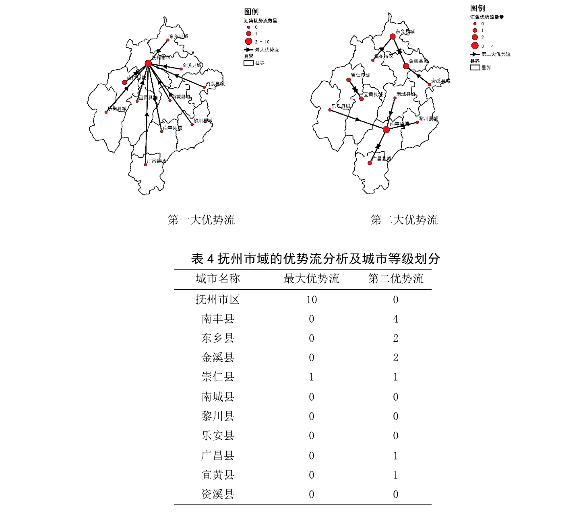
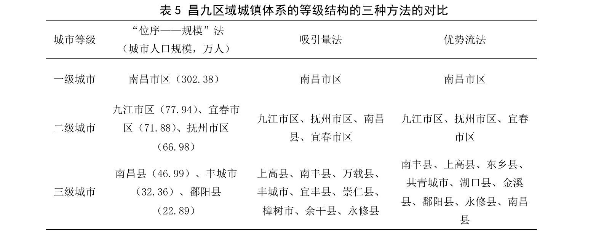
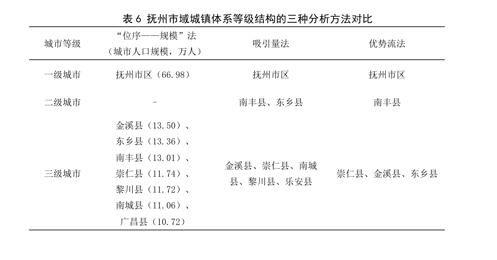

提出了从手机信令数据中获取城市之间的联系流，用以测度城镇体系等级结构的方法。首先使用手机信令数据测算城市之间的人流联系，以人流联系反映城市之间的相互作用，从联系流量、联系流向两个维度测算了城市中心性，提出了吸引量法、优势流法两种分析城镇体系等级结构的方法。其次以江西省昌九区域为案例，基于手机信令数据，分别使用吸引量法、优势流法测度了城镇体系等级结构，并与传统“位序—规模”法得出的结果进行了比较。研究结果表明，基于手机信令数据的吸引量法、优势流法能较好地分析城市中心性，有助于识别出城市人口规模不大，但在区域内城市相互作用中具有较高中心性的城市等级，这两种方法适用于城镇体系现状分析和规划实施评估。
近年来，学界出现了基于手机信令数据的城市研究，主要集中在城市活动、职住关系等方面。近期国内学者在利用手机信令数据测度城市空间结构和城市中心体系等方面展开了研究，李星月等人则利用手机信令数据测算了县域范围内乡镇之间的通勤联系，从而测度了市区与周边乡镇的同城化关系。总体而言，手机信令数据应用于城镇体系的研究还处于起步阶段，尚需要进行系统性研究。
本文以江西省昌九区域为案例，包含南昌市、九江市、抚州市、宜春市4个地级市全部行政辖区以及上饶市的鄱阳县、余干县和万年县，区域总面积约为7.15万平方千米，总常住人口约为2257万。该区域城镇体系包含了4个地级城市、36 个县城 ( 县级市 )。
研究的基础数据是中国联通手机信令数据，记录时间为2015年10～11月，连续26个工作日和11个休息日。每条手机信令包括了经加密脱敏后的匿名用户识别号、信令发生时间、信令类型及信令发生时手机连接的基站。在研究区域内，平均每日记录到约156万用户的约1亿条信令记录。在26个工作日中重复出现16日及以上的用户视为区域内活跃用户，记录到的活跃用户有 1389459 个。
本研究包含三大内容：
本区域40个城市中心城区以外的地域以乡镇行政边界为空间单元进行划分。采用上述方法，研究最终将昌九区域划分为639个空间单元，包括40个城市空间单元、599 个乡镇空间单元。
按手机信令发生时所连接的基站空间位置，根据划分后的639个空间单元识别城镇之间的人流联系度，包括4个步骤:
手机信令数据反映的两个城市之间的人流联系本是一种互为目的地的双向联系，以该城市为目的地的联系反映了外部城市与该城市相互作用的向心性，而向心性体现了城市的集聚性、统治力，更能反映该城市在城镇体系中的等级地位。为此，可以选择以该城市为目的地的人流联系总量(即城市在联系网络中的总吸引量)作为城市中心性的表征指标。
通过上述方法计算得到昌九区域40个城市的网络吸引量，采用自然断裂点法，按网络吸引量的大小将这些城市划分为4个等级(表1)。
以抚州市域为例，将吸引量法用于市域城镇体系等级结构分析。在抚州市域城镇体系中，研究只考虑该市域内11个城市之间的网络吸引量，由此得出抚州市区处于市域内第一级，南丰县城、东乡县城处于市域内第二级，其余 8 个城市处于市域内第三级(表2)。
优势流法是根据一个城市某种要素的相对较高流向来判断该城市在城镇体系中的地位，具体包括最大优势流、第二大优势流和第三大优势流等较高优势流。在本研究中，使用手机信令数据测算得出城市之间的联系流向，在每一城市的网络吸引流向中计算汇集优势流的数量，作为城市中心性的指标。具体分为两个步骤：①比较从每一城市出发至其他城市的联系流，按人次数量确定每一城市出发的最大优势流、第二大优势流和第三大优势流的流向；②以每一城市作为目的地，汇总从其他城市流入的优势流数量，按各自吸引的优势流数量确定城市中心性。
分别计算昌九区域内40个城市之间的最大优势流、第二大优势流和第三大优势流，将各城市按汇集到的优势流数量，采用自然断裂法分为4个等级(图2，表3)。结果显示，在昌九区域内，南昌市区汇集了23个城市的最大优势流，九江市区汇集了6个城市的最大优势流，抚州市区汇集了3个城市的最大优势流，还有8个城市汇集了1个城市的最大优势流。在这其中，宜春市区仅汇集到了万载县城的最大优势流。从最大优势流的数量看，南昌市区在昌九区域内的中心性非常突出。
 由于多数城市的最大优势流均汇集在南昌市区，研究继续选择第二大优势流、第三大优势流和第四大优势流进行比较，深入分析昌九区域城镇体系等级结构。其中，南昌市区汇集了14个城市的第二大优势流，九江市区汇集了4个城市的第二大优势流，抚州市区汇集了8个城市的第二大优势流，宜春市区汇集了3个城市的第二大优势流，还有9个城市汇集了1个以上城市的第二大优势流。而从第三大优势流看，宜春市区和南丰县城汇集的第三大优势流的数量最多，但与其他城市相比差别不大。
在地级市的市域城镇体系层面进行优势流分析，同样需要排除市域内城市与市域外城市之间的联系，只考虑市域内部城市之间的相互作用。继续以抚州市域城镇体系为例，抚州市区汇集的优势流数量多，属于市域城镇体系等级结构中的第一级城市，其中南丰县城汇集了4个城市的第二大优势流，其在抚州市域内城市网络吸引流向上体现出了较高的中心性，可以视为抚州市域城镇体系等级结构中的第二级城市(图3，表 4)。
使用同样的城市空间单元，对昌九区域内40个城市在第六次全国人口普查得出的常住人口数据进行汇总，得到40个城市以常住人口为表示方式的城市规模。采用“位序— 规模”法，按照2014年国务院颁布的《关于调整城市规模划分标准的通知》，将40个城市划分为大城市(100万～300万人)、中等城市(50万～100万人)、Ⅰ型小城市(20万～50万人)和Ⅱ型小城市(20万人以下 )4 个等级的规模等级体系。
将吸引量法、优势流法得出的结果与“位序—规模”法得出的结果进行比较，发现其主要区别在于区域城镇体系等级结构的二级城市划分上(表5)。按吸引量法得出的结果，南昌县城进入了第二级城市且吸引量高于宜春市区。南昌县城与南昌市区直接相邻，其按网络吸引量排序的中心性较高，是因为已经承担了中心城市南昌市区的部分功能。按优势流法得出的结果，宜春市区在网络流向中心性上明显弱于九江市区和抚州市区，达不到区域内第二级城市的要求。在三级城市划分上，研究按吸引量法和优势流法对城市中心性进行了分析，识别出了城市规模不大，但中心性较强的城市，如上高县城、南丰县城和东乡县城等，均能进入区域城镇体系的第三级。
继续以抚州市域为例，进行市域城镇体系层面的三种方法得出的结果的比较(表6)。按常住人口规模将市域内的11个城市划分为一级城市(50万～100万人)、二级城市(20万～50万人)、三级城市(10万～20万人)和四级城市(10万人以下)。三种方法相比较，主要区别也在于市域内第二级城市的划分上。由于各个县城的常住人口规模比较接近，均在20万人以下，采用“位序—规模”法划分，没有一个县城在规模上明显大于其他县城，不存在县域副中心城市。而采用吸引量法、优势流法分析城市中心性，南丰县城的网络吸引量、网络吸引流向均明显高于其他县城，属于市域城镇体系的第二级，可以视为市域内的副中心城市。这也说明城市中心性未必与城市规模直接相关。
